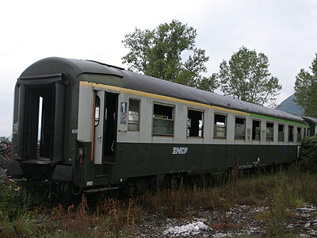

DEV UIC-Y
Voitures SNCF aux normes UIC
Les DEV UIC sont des voitures d'express conçues par la Division des Etudes Voitures et wagons (DEV) de la SNCF et suivant les recommandations de
l'Union Internationale des Chemins de Fer (UIC).
La DEV a également étudié des voitures restaurant et des voitures en restauration libre-service dites "Gril-Express" qui utilisent un chaudron très proche de celui des UIC-Y.
Effectifs et diagrammes
1319 voitures ont été construites de 1963 à 1976 pour la SNCF. Huit voitures construites pour les CFL furent intégrées au parc SNCF.
Diagrammes d'origine par programmes de construction :
UIC60 : 55 B10
UIC61 : 45 B10
UIC62 : 30 A9, 28 B9c9s
UIC63 : 30 B10, 25 B9c9s
UIC64 : 30 B10, 25 B9c9s
UIC65 : 3 A7D, 22 A9, 30 B10, 25 A4c4B5c5x
UIC66 : 19 A9, 50 A4B5x, 40 A4c4B5c5x
UIC67 : 20 A7D, 26 A9, 50 A4c4B5c5x, 74 B9c9x
UIC68 : 20 A7D, 88 A9, 26 B9c9x
UIC69 : 110 B10, 68 B5Dd2, 50 B9c9x
UIC70 : 50 B5Dd2, 150 B9c9x
UIC71 : 60 A4c4B5c5x, 70 B9c9x
3 A4B5x et 5 B10 furent programmées en 1961 pour les CFL.
Diagrammes apparus par déclassements et transformations
Transformations
A8x issues de A9.
Déclassements :
A4B5 et B9 issues de A9
B7D issues de A7D
Génèse
Lorsque la SNCF produit ses premières séries de voitures d'express conçues par la Division des Etudes Voitures et wagons, elle respecte
déjà un ensemble de règles permettant à ses voitures de franchir les frontières de nos voisins Européens. Il s'agit notamment de la
convention de Berne qui définit les caractéristiques communes d'écartement, de gabarit, d'attelage ou de frein continu.
Dans les années 1950, l'UIC décide d'aller plus loin en proposant des équipements et des diagrammes unifiés pour toutes les voitures destinées aux
relations internationales. Elle propose alors deux schémas différents. Le type "UIC X" très inspiré des voitures d'express Allemandes fait 26,4m de long,
12 compartiments en 2e classe et 10 compartiments en 1e classe. L'étroitesse de ce type de voiture conduit à limiter le nombre de sièges à six par
compartiment, quel que soit la classe (soit 72 places en 2e et 60 en 1e). Le type "UIC Y" est plus court (24,5m) mais, par conséquent, la largeur plus généreuse
permet de réaliser des compartiments de 8 places en 2e. Ce type permet de loger 80 places en 2e classe et 54 en 1e. Les Chemins de fer Italiens (FS) construisent les premières voitures de type UIC-Y en 1961, notamment quatre prototypes de 2e classe, mixte 1e/2e à places assises ou à couchettes. Mais hormis une courte série de vingt A9, les FS adoptent finalement le type X.
La SNCF, mettant la priorité sur la capacité pour assurer les pointes de trafic, opte pour le type "UIC-Y" à l'inverse de la majorité des autres administrations ouest-Européennes. Ce type est tout de même assez courant en Europe de l'est et au Danemark.
A4B5x 50 87 39-70 670-5 à Bourg St Maurice (07/02/2004)
B10 50 87 20-71 795-0 à Bourg St Maurice (07/02/2004)
Carrière
Les premières commandes de voitures UIC-Y SNCF concernent des voitures de seconde classe. Outre des caractéristiques édictées par l'UIC
(utilisation de portes d'accès pliantes 'Mielich', intercirculation par des doubles portes et raccordements des voitures par des bourrelets en élastomère),
les UIC se distinguent des DEV AO par l'adoption du bogie Y 24. Il s'agit d'une évolution du Y 20 qui posait des
soucis de galop. Les balanciers du Y 24 reposent sur les boites d'essieux par des cols de cygne traditionnels en lieu et place de liaisons englobantes.
Les bogies Y 24 A utilisés sous les UIC de la tranche 1960 posent cependant des soucis de tenue du châssis. Les longerons sont renforcés par voie de maintenance.
Les voitures du programme 61 bénéficient du Y 24 A1 modifié. Et à partir de 1962, le Y 24 A1s apporte une amélioration de l'asservissement longitudinal. qui devient indirect. Mais, contrairement aux Y 20, on prend
soin de monter les biellettes dans le même axe pour éviter le phénomène de galop.
Les premières voitures s'emparent rapidement des trains internationaux des régions Est et Nord, ainsi que des trains nobles du Sud-est.
Les trains à supplément étant encore majoritairement assurés par des DEV Inox, les commandes suivantes portent principalement sur des voitures de 2e classe assises ou couchettes qui possèdent le même chaudron à toit bas.
Dans la commande 1965, des voitures couchettes à deux classes A4c4B5c5x apparaissent. Elles sont équipées d'une toiture réhaussée qui sera reconduite pour toutes les voitures
couchettes mixtes ou de 2e classe commandées par la suite. Au total, sur les 623 voitures couchettes construites, 78 B9c9s réimmatriculées B9c9x ont un toit bas et 545 voitures ont un toit haut.
La commande 1965 se démarque également avec des voitures qui vont s'illustrer sous les feux de l'actualité. Il est en effet prévu de lancer une
relation régulière à la vitesse maximum de 200 km/h. C'est le rapide "Le Capitole" entre Paris et Toulouse qui va bénéficier de cette accélération
sur les longues lignes droites de la Sologne et de la Beauce (l'allure restera bien plus modeste au sud de Limoges...). La SNCF décide, pour marquer le coup,
de peindre ce train en rouge. Ce qui dénote dans un environnement ferroviaire encore vert sombre. Les 3 A7D et 19 A9 du programme 1965, complétées par 4 A9 UIC67, affectées au Capitole restaient semblables aux autres UIC en dehors de leur livrée extérieure et de patins magnétiques installés sous les balanciers de leurs bogies Y 24 A1s.
Les autres A9 UIC67 ainsi que les A7D furent également peintes en rouge. Mais elles se distinguaient par des bogies Y 28 E. Les A9 furent
employées sur l'Etendard et un rapide Paris-Strasbourg. Les A7D furent ventilées sur ces mêmes trains ainsi que les rapides Paris-Le Havre.
Les programmes suivants sortirent d'usine avec la livrée "160", vert garrigue et bandeau gris inox. Elle permit de distinguer ces voitures modernes aptes à 160km/h des séries plus anciennes plafonnant à 140. Ces voitures étoffèrent les relations nationales et internationales de jour comme de nuit. Cependant, les trains les plus nobles, passés dans le giron des TEE, se voyaient déjà confier du matériel plus exclusif et prestigieux, les TEE Grand Confort sur le Sud-Ouest et l'Est, les TEE Inox sur le Nord et le Sud-est.
Seconde partie de carrière
Après un bref service de trois ans sur le prestigieux rapide Capitole, les UIC aptes à 200 km/h durent céder la place aux nouvelles GC. Elles furent néanmoins
affectées encore peu de temps à ses dédoublements. Tout le parc est finalement repeint en livrée 160. L'arrivée massive des Corail à partir de 1975 pousse rapidement les UIC vers un second rôle. Des échanges de bogies V200 sous des B10 permettent néanmoins d'assurer des trains 1e/2e classe Paris-Bordeaux à 200 km/h.
Dans les années 1980, les voitures de 1e classe sont déclassées en B9 ou A4B5. 19 voitures, affectées aux trains de pélerins, deviennent des A8x avec transformation d'un compartiment. De même, les A7D deviennent B7D. Ces voitures passent progressivement au parc régional. 15 B10 sont vendues à la SNCB sous l'appelation K4 BD avec transformation d'un compartiment pour bagages. Une B7D est vendue au Copef.
Les voitures de nuit continueront leur service, mais en renfort sur les supplémentaires des vacances, jusqu'aux années 2000. Grandes Lignes se sépare de ses dernières UIC en 2002 pour les places assises, 2008 pour les dernières couchettes.
L'activité TER récupère un grand nombre de voitures. Elles sont visibles notamment dans les régions Rhône-Alpes, Alsace, Pays de Loire. Elles conservent leur livrée 160 grise et verte tout juste complétée par des logos
TER. PACA fut la seule région qui ait repeint des UIC (trois B7D) en livrée TER. Toutes ces voitures ont été radiées vers 2007-2008 suite à l'arrivée des nouveaux automoteurs TER plus adaptés au service omnibus
que ces voitures conçues à l'origine pour des relations internationales.
Seconde vie
Des UIC sont toujours visibles, soit dans le parc spécial wagons (voitures de cantonnement, véhicules d'accompagnement de wagons d'intervention WSGI,
voiture spéciale de contrôle de rails par ultrasons USV3, voiture spéciale 195 de contrôle Radio Sol/train), rame "Océane"
des trains croisière, ou les Chemins de fer touristiques (141R420 de Clermont, 141R1199 de Nantes, CFT de la vallée de l'Aa, ATT Centre Var, 241P17 du Creusot, APMFS à Ambérieu,
Code66 à Villeneuve St Georges).
Quelques données techniques
Constructeurs : CIMT, De Dietrich, Carel et Fouché
Vitesse maximum autorisée : 150km/h, portée à 160 km/h avec le frein électro-pneumatique, 200 km/h pour les voitures Capitole (patins magnétiques)
Alimentation du chauffage : électrique (1500V cc, 1500V 50 Hz, 3000V cc, 1000V 16,7 Hz)
Alimentation des auxiliaires sur batteries, recharge par dynamo.
Longueur : 24,5 m
Tare : 41 à 44t
Mouvement de carrière
Voitures CFL revendues à la SNCF
UIC AB 51 82 39 80 121-1 -> 51 87 39 80 701-5
UIC AB 51 82 39 80 122-9 -> 51 87 39 80 702-3
UIC AB 51 82 39 80 123-7 -> 51 87 39 80 703-1
UIC B 51 82 20 80 201-2 -> 51 87 20 80 801-4
UIC B 51 82 20 80 202-0 -> 51 87 20 80 802-2
UIC B 51 82 20 80 203-8 -> 51 87 20 80 803-0
UIC B 51 82 20 80 204-6 -> 51 87 20 80 804-8
UIC B 51 82 20 80 205-3 -> 51 87 20 80 805-5
Pour plus d'info :
Les fiches Voiture UIC-Y SNCF et K4 SNCB
sur Wikipedia.
Les UIC et K4 sur Trains-Europe.
La voiture bar B7D du COPEF.
La numérotation des tranches des voitures SNCF (détail des n° des UIC-Y avant immatriculation UIC ) sur le site EuroCity 64 .
Cette ex-A9 déclassée en A4B5 et repeinte en livrée d'origine passe la Loire à Montlouis, tirée par la 141 R 1199 de Nantes (23/05/2010)
A8x (ex-A9) dans le chantier de Villeneuve-Prairie (04/09/2005)

Cette "fausse" A4B5 sur Y28E (ex-A9 UIC 67) vit ses
derniers instants à Culoz (16/09/2006)
B5Dd2 à Clermont-Ferrand (02/06/2004)
B5Dd2 50 87 82-70 104-1 voiture de service à Clermont-Ferrand (19/01/2008)
B9c9x à toit bas radiée (Juvisy, 07/03/2004)
A4c4B5c5x en gare de Paris-Est (13/10/2003)
B9c9x ex-Wasteel sur bogies Y 16 Lms (Paris Austerlitz, 21/02/2003)
B9c9x Océane à Bourg Saint Maurice (07/02/2004)
Cette ex-A4c4B5c5x déclassée au parc spécial wagons sous le n° UAS 979 0 667-0
accompagne un train désherbeur à grand rendement (Paris-Gare de Lyon, 01/04/2006)
A4c4B5c5x voiture de cantonnement pour train de secours (Nîmes, 26/04/2008)
Cette UIC "USV3" est transformée pour le contrôle des rails par ultrasons
(Noisy le Sec, 12/07/2003)